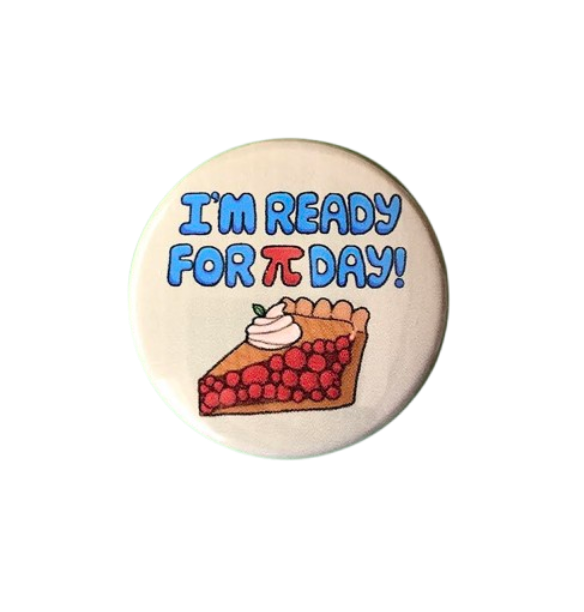
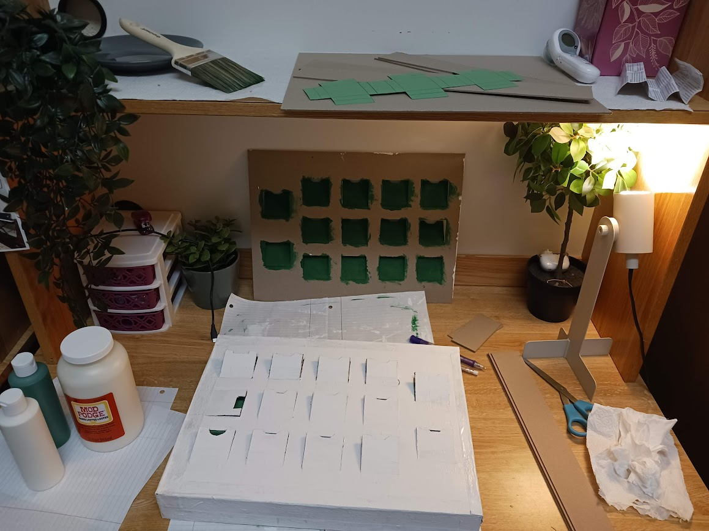
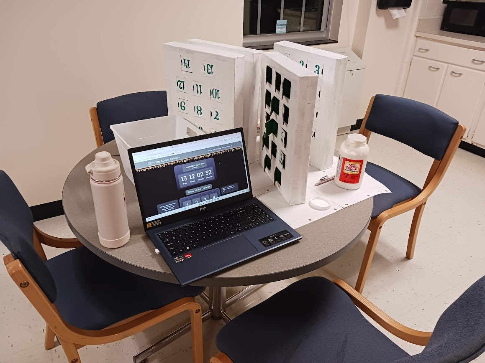

Author's Note
Hiii! What a month it has been!
This year I've definitely done the most I've ever done (and possibly the most I will ever do) for pi day 😅
I want to give a very special thank you to my roommate and best friend Christie for everything that she's done to help me directly and indirectly with pi day stuff - a lot of things would not have been possible without her help and support and I appreciate everything she's done 😁❤️
(More info will be revealed starting March 3rd at 1:41:59pm because I don't wanna give any spoilers to anyone 😉) For example, she drew the designs of the pins in the advent calendar such as this one:
And you may notice that behind all the doors there are images of real objects, and that's because those are what I put in actual physical advent calendars that my roommate and I made!
And the physical advent calendars took a really long time to make, since it required a lot of cutting, taping, gluing, painting... etc. Also, because I don't normally do arts and crafts projects, I had to buy all the supplies. And unfortunately, after buying everything I needed to make the advent calendars and everything to put inside of them, I may have slightly surpassed my budget of $314.15... 😅
So if I were to make advent calendars again next year, I probably wouldn't need to spend as much since now I have the supplies. However, next year I will likely either not make them again or start a lot earlier (like during winter break), since I got somehwat lucky that my course load wasn't too bad so far this semester so I was able to cram making all the advent calendars between February 19th (when I finished getting most of the supplies) till March 1st, but it was quite stressful 😟.
Luckily, this year I started the website early enough (during winter break) and I'm a bit more familiar with making websites than I was last year, so I actually really enjoyed making this website and it wasn't too stressful :D. And I also plan on either updating this website or making a whole new website next year :)
P.S. Don't try to click "open door" for any doors that can't be opened yet - if you try to, no matter how many times you click it, it won't open. Also, that would make me really mad >:(
My insta:
I want to give a very special thank you to my roommate and best friend Christie for everything that she's done to help me directly and indirectly with pi day stuff - a lot of things would not have been possible without her help and support and I appreciate everything she's done 😁❤️
(More info will be revealed starting March 3rd at 1:41:59pm because I don't wanna give any spoilers to anyone 😉) For example, she drew the designs of the pins in the advent calendar such as this one:

And you may notice that behind all the doors there are images of real objects, and that's because those are what I put in actual physical advent calendars that my roommate and I made!


And the physical advent calendars took a really long time to make, since it required a lot of cutting, taping, gluing, painting... etc. Also, because I don't normally do arts and crafts projects, I had to buy all the supplies. And unfortunately, after buying everything I needed to make the advent calendars and everything to put inside of them, I may have slightly surpassed my budget of $314.15... 😅
So if I were to make advent calendars again next year, I probably wouldn't need to spend as much since now I have the supplies. However, next year I will likely either not make them again or start a lot earlier (like during winter break), since I got somehwat lucky that my course load wasn't too bad so far this semester so I was able to cram making all the advent calendars between February 19th (when I finished getting most of the supplies) till March 1st, but it was quite stressful 😟.
Luckily, this year I started the website early enough (during winter break) and I'm a bit more familiar with making websites than I was last year, so I actually really enjoyed making this website and it wasn't too stressful :D. And I also plan on either updating this website or making a whole new website next year :)
P.S. Don't try to click "open door" for any doors that can't be opened yet - if you try to, no matter how many times you click it, it won't open. Also, that would make me really mad >:(
My insta: